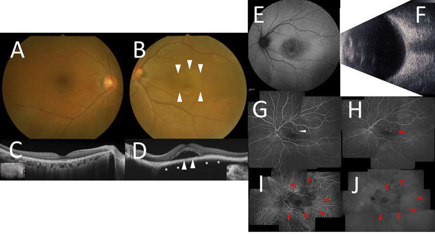
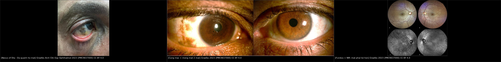
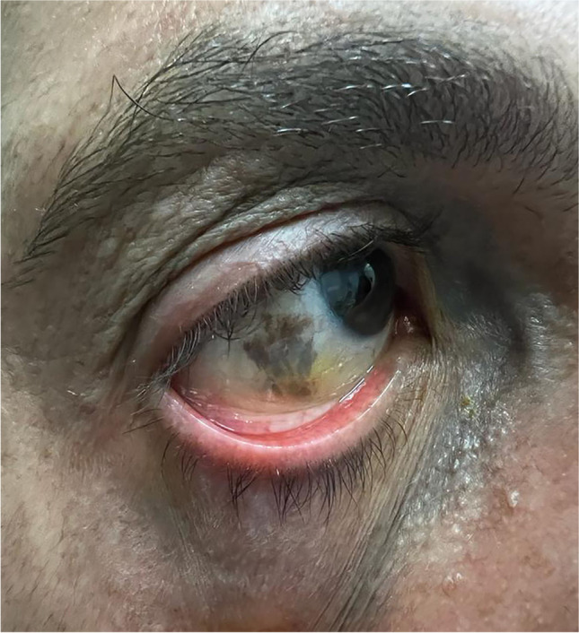
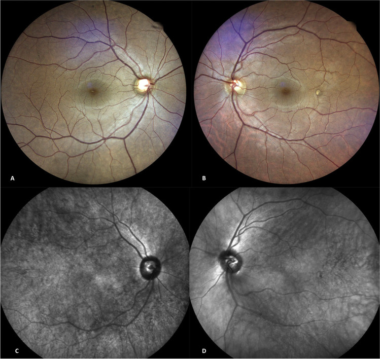
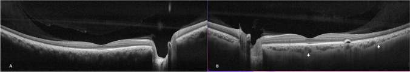
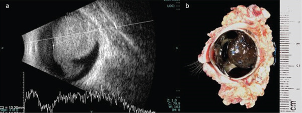

3235 — Melanocytosis mắt – hắc mạc & Nevus of Ota: "nền sắc tố" làm mờ melanoma / Oculodermal melanocytosis and the melanoma hidden by pigment
Tags: pattern:sac-to-lan-toa pattern:hac-mac-day-lan-toa pattern:di-the-mau-mong-mat vung:mat vung:hac-mac vung:cung-mac vung:mong-mat protocol:EDI-OCT protocol:UBM-35-50MHz protocol:FAF protocol:MRI-hoc-mat incidentaloma:khong
Mức chắc chắn (certainty): tổng hợp y văn (literature synthesis) — dựng từ tổng quan hình ảnh đa phương thức ODM (Graefes Arch Clin Exp Ophthalmol 2023, PMC9837000), đoàn hệ 213 ca ODM người Ấn (Indian J Ophthalmol 2025, PMC11834911), 15 mắt melanocytosis hắc mạc trên EDI-OCT (Ophthalmology 2014, PMID 24139152), 7.872 mắt melanoma hắc mạc (JAMA Ophthalmol 2013, PMID 23681424), nghiên cứu ghép cặp 57 vs 114 (Ophthalmology 2013, PMID 23522968), ước tính 1/400 (Ophthalmology 1998, PMID 9442799) và 3 ca nguyên văn có ảnh (PMC12747081, PMC10131401, PMC11520808). Nhóm không có bệnh nhân của mình; chỗ chưa đủ chắc ghi "chưa rõ".
Vị trí trong thư viện: 448 phủ gamut khối hắc mạc + điều trị theo kích thước; 1486 phủ siêu âm khối hắc mạc (MOLES); 1507 phủ melanoma thể lan tỏa; 3231 phủ tổn thương sắc tố mống mắt. Bài này trả lời một câu duy nhất: khi cả nền hắc mạc đã sẫm màu và dày sẵn, làm sao nhận ra melanoma mới mọc trên nền đó — và vì sao nó nguy hiểm hơn melanoma trên mắt bình thường?
Câu chốt: (1) Melanocytosis không phải "nốt ruồi lành" — ước tính 1/400 người có ODM sẽ phát triển melanoma hắc mạc trong suốt cuộc đời (PMID 9442799), trong khi melanoma hắc mạc vốn đã là u nội nhãn ác tính thường gặp nhất ở người lớn; (2) khi melanoma mọc trên nền melanocytosis, di căn gấp đôi: 27% vs 15% lúc 5 năm, 48% vs 24% lúc 10 năm (PMID 23681424); (3) hình ảnh dễ đánh lừa vì không có khối vòm — hắc mạc dày +23% so với mắt bên (326,4 vs 264,4 µm, PMID 24139152), nên phải đo bất đối xứng giữa hai mắt, không dựa vào một ngưỡng tuyệt đối.
1. Tổng quan bệnh học – cơ chế hình ảnh
1.1 Bản chất: tế bào hắc tố lạc chỗ bẩm sinh, không phải "tàn nhang"
Melanocytosis mắt (ocular melanocytosis, melanosis oculi) là u mô thừa tế bào hắc tố bẩm sinh: các tế bào hắc tố dạng gai (dendritic melanocytes) dừng lại giữa đường di chuyển từ mào thần kinh ra da, nằm trong bì (dermis), củng mạc ngoài (episclera), củng mạc, mống mắt và hắc mạc. Ba thể lâm sàng:
- Melanocytosis mắt đơn thuần — chỉ ở mắt.
- Melanocytosis mắt – da (oculodermal melanocytosis, ODM) = Nevus of Ota — thêm mảng sắc tố da vùng V1 (mắt) ± V2 (hàm trên), cùng bên.
- Nevus of Ito — cùng tế bào, nhưng vùng V2–V3 (cổ trên, vai); ít liên quan mắt hơn.
Sắc tố thường có từ lúc sinh hoặc xuất hiện trong năm đầu, rồi đậm lên ở tuổi dậy thì và khi mang thai (melanocyte nhạy hormon) — chính vì vậy nhiều người lớn mới đi khám vì "mảng xanh xám lan ra", và dễ bị chẩn đoán nhầm là bầm máu, bớt café-au-lait hoặc khối u. Tổng quan 2023 xếp glôcôm và melanoma hắc mạc là hai biến chứng mắt chính (PMC9837000).
Phân bố trong đoàn hệ 213 ca người Ấn: một bên 87%, củng mạc 100%, mi 29%, mống mắt 23%, hắc mạc 20%, da V1–V2 53% (PMC11834911). Nghĩa là 1/5 ca có thành phần hắc mạc — đúng nhóm cần theo dõi bằng hình ảnh.
1.2 Vì sao "xanh xám" — và vì sao đáy mắt tối hơn mắt bên
- Màu xanh xám (slate-grey/blue) của da và củng mạc không phải màu của melanin mà là hiệu ứng Tyndall: sắc tố nằm sâu trong bì/củng mạc, ánh sáng xanh bước sóng ngắn bị tán xạ ngược ra nhiều hơn, ánh sáng đỏ xuyên sâu hơn và bị hấp thụ → mắt người đọc thành "xanh". Đây là lý do mảng sắc tố không mất đi khi ấn kính (khác giãn mạch) và không sờ nổi (khác u).
- Đáy mắt tối hơn: melanin hấp thụ ánh sáng ở mọi bước sóng → võng mạc trên vùng hắc mạc dày sắc tố phản xạ ít hơn, ảnh fundus color sẫm màu kiểu "cà phê sữa"; trên near-infrared (NIR) vùng đó cũng tối hơn (Hình mục 3). Vì vậy so sánh hai mắt cùng lúc, cùng máy, cùng cài đặt là bước đầu tiên, rẻ nhất và hay bị bỏ nhất.
- FAF giảm (hypo-autofluorescence): lớp võng mạc sắc tố (RPE) bị che bởi sắc tố hắc mạc phía dưới và bởi mô kẽ dày lên → tín hiệu lipofuscin bị chặn; vùng tối trên FAF không đồng nghĩa teo RPE. Đây là cạm bẫy: đọc FAF tối là "teo" rồi kết luận bệnh thoái hóa.
1.3 Vì sao MRI hốc mắt cho tín hiệu đặc trưng (và vì sao không dùng để chẩn đoán)
Melanin là chất thuận từ (paramagnetic) nhờ điện tử không ghép đôi trong cấu trúc indole → rút ngắn T1 và rút ngắn T2:
- T1W: hắc mạc sẫm màu sinh lý vẫn sáng hơn cơ; vùng melanocytosis sáng hơn nữa — "mắt tối" trên T1 là dấu của melanin, không phải mỡ.
- T2W: giảm tín hiệu — khác hemangioma hắc mạc lan tỏa (T2 tăng tín hiệu, ngấm thuốc mạnh và đồng nhất).
- Giá trị thực dụng: MRI T1 fat-sat + T2 fat-sat ± cản quang dùng khi môi trường trong suốt kém (đục dịch kính, xuất huyết) hoặc để đánh giá xâm lấn ngoài củng mạc trước khi cắt nhãn cầu; không dùng để phân biệt melanocytosis với melanoma thể dẹt, vì cả hai đều là melanin.
1.4 Vì sao hắc mạc "dày ra" trên OCT — và cái bẫy của con số
EDI-OCT/SS-OCT ở 15 mắt melanocytosis hắc mạc một bên (PMID 24139152):
| Thông số | Mắt bệnh | Mắt bên | Ý nghĩa |
|---|---|---|---|
| Hắc mạc dưới hoàng điểm | 326,4 µm (120–459) | 264,4 µm (94–462) | +23%, nhưng p = 0,15 — không có ý nghĩa thống kê với n = 15 |
| Mô kẽ quanh mạch | — | — | +51%, p = 0,01 |
| Tỉ lệ mô kẽ / hắc mạc | 66% | 54% | p = 0,0001 |
| Bờ trước hắc mạc | nhẵn, đều (15/15) | — | Không "lồi cục" như u |
| Võng mạc phía trên | bình thường (14/15) | — | Tổn thương ở dưới, không phải bệnh võng mạc |
Bài học kép: (a) cái dày lên là mô kẽ quanh mạch (melanocyte + stroma), không phải mạch máu — nên không có "khối" để đo; (b) chênh lệch tuyệt đối chưa đủ mạnh về mặt thống kê trong mẫu nhỏ, nên chẩn đoán dựa vào bất đối xứng + bờ nhẵn + không dịch dưới võng mạc, và theo dõi thay đổi theo thời gian mới là bằng chứng. Hệ quả hình ảnh: ranh giới hắc mạc–củng mạc (choroidal-scleral junction) mất thấy ở mắt bệnh (Hình mục 3-B) — dấu hiệu rất hữu ích khi so hai mắt.
1.5 Vì sao melanoma trên nền melanocytosis nguy hiểm hơn
- Nhiều tế bào hắc tố hơn = nhiều "nguyên liệu" cho đột biến: phân tích tiến hóa gen ở một ca cắt nhãn cầu cho thấy đột biến Gq (PLCB4) xuất hiện sớm trong vùng melanocytosis, còn mất BAP1 xuất hiện muộn, trong tế bào u (PMC6672022) — melanocytosis là "đất đã cày", không chỉ là dấu chỉ điểm.
- Hệ quả lâm sàng (số liệu lớn): trong 7.872 mắt melanoma, ODM có ở 3% (230 mắt); RR di căn 1,6 (p < 0,001); Kaplan–Meier 27% vs 15% (5 năm) và 48% vs 24% (10 năm); phân tầng theo vị trí: mống mắt 2,8×, hắc mạc 2,6×, củng mạc 1,9× (PMID 23681424). Nghiên cứu ghép cặp theo tuổi/giới/vị trí/kích thước xác nhận HR 1,99 (1,16–3,41), di căn 33% vs 16% (PMID 23522968) — không phải vì u to hơn, mà vì bản chất sinh học.
- Vì sao chẩn đoán muộn: sắc tố nền che thay đổi sớm; u không có vòm nên không "nổi" trên ảnh; bệnh nhân đã quen với mắt sẫm màu nên bỏ qua mờ thị lực. Ca trong PMC12747081: mờ dần 7 tháng, cuối cùng là bong võng mạc + melanoma, rồi glôcôm góc đóng thứ phát — tức ba tầng biến chứng của cùng một bệnh.
2. Mẫu hình + chẩn đoán phân biệt theo vị trí (gamut)
Mẫu hình trung tâm: tăng sắc tố lan tỏa, một bên, không có khối, không có bờ — ở củng mạc ngoài/mống mắt (nhìn thấy) và/hoặc hắc mạc (chỉ thấy khi soi đáy mắt + hình ảnh).
Theo vị trí:
- Đoạn trước (củng mạc ngoài, mống mắt, góc tiền phòng, thể mi): melanocytosis củng mạc/mống mắt; melanoma thể mi (khối + mạch máu "sentinel vessel" quanh rìa); u hắc tố mống mắt (3231); sắc tố góc do dùng thuốc/mống mắt phân tán; melanoma thể mi xâm lấn góc.
- Hắc mạc (đáy mắt): melanocytosis hắc mạc; melanoma hắc mạc thể dẹt/lan tỏa (1507); nevus hắc mạc; hemangioma hắc mạc lan tỏa (Sturge–Weber); CHRPE; melanocytoma đĩa thị; tăng sắc tố sau viêm và "pseudo-choroidal melanocytosis" trong viêm hắc võng mạc birdshot.
- Ngoài nhãn cầu: sắc tố da V1/V2 (Nevus of Ota) — không phải khối u da; cần phân biệt melanoma da, bầm máu, bớt sắc tố bẩm sinh.
Gamut của "đáy mắt tối + hắc mạc dày" (5 thực thể hay gặp nhất):
- Melanocytosis hắc mạc — bẩm sinh, một bên, có sắc tố củng mạc/mống mắt cùng bên, hắc mạc dày đều, bờ nhẵn, không dịch dưới võng mạc, ổn định nhiều năm.
- Melanoma hắc mạc thể lan tỏa — dày không đều, dịch dưới võng mạc, sắc tố cam, phát triển theo thời gian (1507).
- Hemangioma hắc mạc lan tỏa — đáy mắt đỏ-cam ("tomato ketchup"), T2 tăng, ngấm thuốc mạnh và sớm, thường kèm bớt rượu vang mặt cùng bên (Sturge–Weber).
- Nevus hắc mạc — dẹt, < 2 mm dày, bờ rõ, có thể có drusen; không dày lan tỏa cả góc phần tư.
- Pseudo-choroidal melanocytosis (birdshot) — hai bên, vùng tối lan rộng dần, kèm viêm (tế bào dịch kính, HLA-A29), hắc mạc dày thay đổi (1,0% trong 1.016 mắt, PMID 42412538).
Ảnh minh họa melanocytosis hắc mạc "đơn thuần" (không melanoma, không sắc tố củng mạc nhìn thấy):

Mắt trái có vùng nâu nhạt quanh hoàng điểm (mũi tên trắng, B); SS-OCT dày hắc mạc không có khối (D, mũi tên); B-scan (F) không thấy khối vòm; FA/ICGA (G–J) chỉ thay đổi sắc tố mạch. Nguồn: BMC Ophthalmol 2023 (PMC10131401), CC BY 4.0.3. Bảng so sánh phân biệt (ma trận đối chiếu)

Trái → phải: (1) mảng xanh xám da quanh hốc mắt phải; (2) củng mạc ngoài/củng mạc sẫm màu + mống mắt đậm hơn ở mắt bệnh (trái) so với mắt lành (phải); (3) fundus + NIR: đáy mắt phải tối hơn rõ rệt. Nguồn: Graefes Arch Clin Exp Ophthalmol 2023 (PMC9837000), CC BY 4.0; ảnh ghép letterbox.| Thực thể (entity) | Hình ảnh điển hình | Chốt vào (rule-in) | Chốt loại (rule-out) | Gợi ý xác nhận |
|---|---|---|---|---|
| Melanocytosis mắt (đơn thuần) | Sắc tố xanh xám củng mạc ngoài, mống mắt đậm hơn, đáy mắt tối; hắc mạc dày đều, bờ nhẵn, không dịch dưới võng mạc | Một bên + sắc tố củng mạc ngoài + bất đối xứng hắc mạc + ổn định ≥ 1 năm | Có khối/bờ rõ, dịch dưới võng mạc, dày tăng khi theo dõi → không phải melanocytosis đơn thuần | EDI/SS-OCT đo độ dày cùng giờ, cùng vị trí; B-scan đối chiếu; ảnh cũ |
| Melanocytosis mắt – da (Nevus of Ota) | Như trên + mảng da V1 ± V2 cùng bên, đậm lên ở dậy thì/thai | Sắc tố da theo da thần kinh V1/V2 + sắc tố củng mạc cùng bên | Sắc tố da không theo da thần kinh, bờ nham nhở, loét → nghĩ melanoma da | Khám da liễu; không cần sinh thiết da nếu điển hình |
| Melanoma hắc mạc thể lan tỏa | Hắc mạc dày không đều, < 20% đường kính đáy; sắc tố cam; dịch dưới võng mạc | Dày ≥ 2 mm hoặc tăng theo thời gian + dịch dưới võng mạc + sắc tố cam | Hắc mạc dày đối xứng, bờ nhẵn, không dịch → melanocytosis | EDI-OCT + B-scan 3 tháng; chụp lại để chứng minh tăng |
| Hemangioma hắc mạc lan tỏa | Đáy mắt đỏ-cam, hắc mạc dày lan tỏa; T2 tăng, ngấm thuốc mạnh | MRI T2 tăng + ngấm mạnh + bớt rượu vang mặt cùng bên | T2 giảm + không ngấm mạnh → melanin (melanocytosis/melanoma) | MRI hốc mắt T1/T2 fat-sat; ICGA |
| Nevus hắc mạc | Dẹt, < 2 mm, bờ rõ, drusen, có thể giảm sắc tố trung tâm | Dẹt, ổn định, không dịch, không sắc tố cam | Dày > 2 mm hoặc có dịch → nghi melanoma | Ảnh màu + EDI-OCT + FAF; theo dõi 6–12 tháng |
| Pseudo-choroidal melanocytosis (birdshot) | Vùng tối hai bên, lan rộng dần, kèm viêm dịch kính; hắc mạc dày thay đổi | Hai bên + viêm mắt + HLA-A29 + vùng tối lan theo thời gian | Một bên, không viêm, có sắc tố củng mạc → melanocytosis thật | Khám dịch kính, HLA-A29, ICGA (viêm mạch) |
3.1 Dấu hiệu "phải dừng lại" khi đang theo dõi melanocytosis
Theo dõi melanocytosis chỉ có giá trị nếu mỗi lần khám đều trả lời 4 câu (đây là "checklist melanoma trên nền sắc tố"):
- Độ dày có tăng không? — đo cùng kinh tuyến (clock hour), cùng khoảng cách từ hoàng điểm, ghi mm; tăng ≥ 0,5 mm giữa hai lần là bất thường.
- Có dịch dưới võng mạc (subretinal fluid) không? — dấu nhạy nhất của melanoma có triệu chứng; melanocytosis không có.
- Có sắc tố cam (orange pigment) / drusen mới không? — lipofuscin trên RPE = hoạt tính u.
- Bờ có mất tính "nhẵn" không? — melanocytosis có bờ trước hắc mạc nhẵn ở 15/15 mắt (PMID 24139152); mất nhẵn = nghi u.
4. Protocol chụp + theo dõi
4.1 Bộ hình tối thiểu khi phát hiện melanocytosis (một lần)
| Bước | Việc làm | Ngưỡng/ghi chú |
|---|---|---|
| 1 | Soi đáy mắt giãn đồng tử hai bên + gonioscopy + nhãn áp | Ghi rõ có sắc tố góc, dính góc, nhãn áp mmHg |
| 2 | UWF color + FAF hai mắt | Cùng máy, cùng cài đặt; FAF tối không đồng nghĩa teo |
| 3 | EDI-OCT hoặc SS-OCT qua hoàng điểm + qua vùng dày nhất | Đo hắc mạc dưới hoàng điểm và điểm dày nhất, ghi µm; ghi rõ ranh giới hắc mạc–củng mạc có thấy hay không |
| 4 | B-scan A/B 10–20 MHz | Đo độ dày lớn nhất (mm), mô tả hồi âm trong u, tìm hollowing, dịch dưới võng mạc |
| 5 | UBM 35–50 MHz hoặc AS-OCT nếu có sắc tố mống mắt/thể mi | Đo thể mi, tìm khối thể mi, hở góc |
| 6 | MRI hốc mắt (T1 fat-sat ± cản quang, T2 fat-sat) | Chỉ khi môi trường trong suốt kém, nghi xâm lấn ngoài củng mạc, hoặc cần phân biệt hemangioma (T2 tăng) |
4.2 Ngưỡng định lượng dùng trong quyết định
- Nghi melanoma: dày ≥ 2 mm, hoặc tăng ≥ 0,5 mm so với lần trước, hoặc có dịch dưới võng mạc, hoặc sắc tố cam, hoặc triệu chứng mới (mờ, ám điểm, chớp sáng).
- Theo dõi melanocytosis ổn định: khám 2 lần/năm (khuyến nghị của PMID 23681424) — xem mục 7 về mức độ chắc chắn của khoảng này.
- Bất đối xứng hắc mạc: chênh > 20–25% so với mắt bên là mốc tham chiếu hợp lý (dựa trên +23% trong PMID 24139152); không dùng một con số tuyệt đối vì hắc mạc bình thường dao động 94–462 µm ngay trong cùng nghiên cứu.
- Glôcôm: nhãn áp > 21 mmHg, góc hẹp/dính, hoặc sắc tố góc dày → điều trị theo glôcôm; nhớ melanoma thể mi có thể gây glôcôm góc đóng thứ phát (PMC12747081).
flowchart TD
A[Phát hiện sắc tố củng mạc/mống mắt hoặc đáy mắt tối một bên] --> B[Khám hai mắt: đáy mắt + góc + nhãn áp]
B --> C[UWF color + FAF + EDI-OCT + B-scan]
C --> D{Có khối, dày ≥ 2 mm, dịch dưới võng mạc, sắc tố cam?}
D -->|Có| E[Nghi melanoma: chuyển chuyên khoa u mắt, chụp lại 4-6 tuần, cân nhắc sinh thiết/xạ]
D -->|Không| F{Có sắc tố da V1-V2?}
F -->|Có| G[Nevus of Ota: tư vấn + theo dõi 6 tháng/lần]
F -->|Không| H[Melanocytosis mắt đơn thuần: theo dõi 6 tháng/lần]
G --> I[Đo lại độ dày cùng vị trí mỗi lần]
H --> I
I --> J{Tăng ≥ 0,5 mm hoặc mất bờ nhẵn?}
J -->|Có| E
J -->|Không| I
4.3 Vì sao không có hệ phân độ (RADS) cho melanocytosis
Không tồn tại RADS hay score được hội đồng thống nhất cho melanocytosis — khác khối hắc mạc (MOLES/AJCC, xem 1486, 1507). Vì vậy trong thực hành phải tự tạo mốc nội bộ: một ảnh chuẩn (baseline) + một bảng đo (giờ, khoảng cách, µm) + so sánh hai mắt. Đây là lý do hình ảnh lưu trữ quan trọng hơn "đọc lại từ trí nhớ".
5. Biến thể bình thường và cạm bẫy
- Đáy mắt sẫm màu sinh lý ở người da sẫm (châu Á, châu Phi) — đối xứng hai bên, không có sắc tố củng mạc ngoài, không đậm lên theo tuổi. Melanocytosis bất đối xứng; đây là khác biệt cốt lõi.
- Melanocytosis hai bên (khoảng 13% trong PMC11834911) — ca PMC11520808 có melanoma hắc mạc hai bên; khi thấy một mắt, bắt buộc khám kỹ mắt bên (bẫy satisfaction of search).
- Melanocytosis hắc mạc "cô lập" (không sắc tố củng mạc) — 20% trong đoàn hệ 213 ca; chỉ có đáy mắt tối, không có dấu hiệu ngoài → dễ bị bỏ qua hoàn toàn.
- FAF tối bị đọc là teo RPE — sắc tố hắc mạc che tín hiệu; đừng kết luận thoái hóa khi chưa có OCT.
- "Đã đi laser da rồi thì hết nguy cơ" — laser làm nhạt da, không thay đổi hắc mạc/củng mạc; nguy cơ melanoma giữ nguyên.
- Mờ thị lực ở người có Nevus of Ota không được quy cho "sắc tố" — ca PMC12747081 mờ 7 tháng trước khi chẩn đoán, vì bong võng mạc do melanoma; bất kỳ mờ mới, ám điểm, ruồi bay tăng đều phải soi đáy mắt + B-scan ngay.
- Tưởng melanocytosis nhưng là viêm — pseudo-choroidal melanocytosis trong birdshot (1,0% các mắt) hai bên + lan rộng + có viêm; hỏi HLA-A29, khám dịch kính.
- Glôcôm "không rõ nguyên nhân" ở mắt có sắc tố góc dày — nghĩ melanocytosis góc hoặc melanoma thể mi xâm lấn góc; siêu âm sinh học (UBM) là bước tiếp theo, không phải tăng thuốc mù.
6. Tự lượng giá — Blind Quiz
Ca 1 — Người 30 tuổi, mảng xanh xám quanh mắt phải từ nhỏ, đậm lên gần đây. Không đau, thị lực 10/10.

- Gợi ý: tổn thương phẳng, không sờ nổi, không mất khi ấn kính.
- Câu hỏi: mô tả dấu hiệu? Đây là bệnh gì? Bước khám bắt buộc tiếp theo (3 việc) và vì sao không được dừng ở "bớt sắc tố"?
Bấm để hiện đáp án (findings + chẩn đoán)
- Dấu hiệu: mảng sắc tố xanh xám da quanh hốc mắt + củng mạc ngoài sẫm màu cùng bên; màu xanh do hiệu ứng Tyndall (sắc tố nằm sâu trong bì/củng mạc).
- Chẩn đoán: melanocytosis mắt – da (Nevus of Ota) — tế bào hắc tố bẩm sinh lạc chỗ theo da V1–V2, không phải khối u da.
- Việc phải làm: (1) soi đáy mắt giãn đồng tử hai bên; (2) EDI-OCT + B-scan đo hắc mạc, so hai mắt; (3) gonioscopy + nhãn áp. Vì nguy cơ melanoma suốt đời 1/400, và khi có melanoma thì di căn gấp đôi (PMID 23681424).
- Nguồn ảnh: Graefes Arch Clin Exp Ophthalmol 2023 (PMC9837000), CC BY 4.0.
Ca 2 — Cùng bệnh nhân, soi đáy mắt: mắt phải sẫm màu hơn, không thấy khối. OCT qua hoàng điểm hai mắt.


- Câu hỏi: dấu hiệu chính trên 2 hình? Vì sao không có khối mà vẫn phải theo dõi? Ba dấu hiệu nào sẽ khiến bạn gọi đây là melanoma?
Bấm để hiện đáp án
- Dấu hiệu: (A) fundus/NIR mắt phải tối hơn rõ rệt, đối xứng theo vùng; (B) OCT: ranh giới hắc mạc–củng mạc (choroidal-scleral junction) không thấy ở mắt bệnh, thấy rõ ở mắt lành (mũi tên trắng) — do hắc mạc dày lên, mô kẽ quanh mạch +51% (PMID 24139152).
- Vì sao vẫn theo dõi: melanocytosis là nền tăng nguy cơ, và melanoma mọc trên nền này không có vòm nên phải dùng bất đối xứng + thay đổi theo thời gian làm chẩn đoán.
- Ba dấu hiệu gọi melanoma: dày ≥ 2 mm hoặc tăng ≥ 0,5 mm; dịch dưới võng mạc; sắc tố cam/bờ mất nhẵn. Thêm: triệu chứng mới.
- Nguồn ảnh: Graefes Arch Clin Exp Ophthalmol 2023 (PMC9837000), CC BY 4.0.
Ca 3 — Bệnh nhân Nevus of Ota, mờ thị lực trái tăng dần 7 tháng, không đau. Siêu âm và tiêu bản sau cắt nhãn cầu:

- Câu hỏi: mô tả 2 dấu hiệu trên siêu âm? Vì sao "mờ dần, không đau" là dấu hiệu báo động ở người có Nevus of Ota? Biến chứng muộn nào có thể xuất hiện nếu không điều trị?
Bấm để hiện đáp án
- Dấu hiệu: (a) khối hắc mạc lồi vào dịch kính + bong võng mạc (màng dày, di động); (b) tiêu bản đại thể: khối sẫm màu trong nhãn cầu, hoại tử/xuất huyết trong u.
- Vì "mờ dần, không đau" là báo động: melanoma hắc mạc không đau; ở người có nevus of Ota, mờ thị lực thường bị quy cho "sắc tố" → chẩn đoán muộn. Ở ca này u chỉ được phát hiện khi bong võng mạc.
- Biến chứng muộn: glôcôm góc đóng thứ phát do khối/xuất huyết đẩy, glôcôm tan sắc tố (melanomalytic) và di căn; ca này bỏ cắt nhãn cầu rồi quay lại với glôcôm góc đóng.
- Nguồn ảnh: Case Rep Ophthalmol Med 2025 (PMC12747081), CC BY 4.0.
7. Câu hỏi nghiên cứu & điểm chưa đồng thuận (tính đến 11/2026)
[Tranh cãi] Ở người có melanocytosis mắt, khám 6 tháng/lần có phát hiện melanoma sớm hơn (giai đoạn nhỏ hơn, ít di căn hơn) so với 12 tháng/lần không?
- Đã biết: khuyến nghị 2 lần/năm dựa trên nguy cơ 1/400 và di căn gấp đôi (PMID 23681424); đoàn hệ 213 ca chỉ nói "khám định kỳ" (PMC11834911).
- Chưa rõ: chưa có nghiên cứu so sánh trực tiếp hai khoảng, chưa có số "số ca cần khám để phát hiện 1 melanoma".
- Hướng nghiên cứu: đoàn hệ tiến cứu đa trung tâm, outcome là độ dày u lúc chẩn đoán và tỉ lệ di căn.
- Nguồn: PMID 23681424 (DOI 10.1001/jamaophthalmol.2013.129); PMC11834911.
[Khác biệt thực hành] Vì sao nguy cơ melanoma chênh nhau gần 40 lần giữa các nguồn — 0,25% (1/400) so với 9% trong đoàn hệ châu Á?
- Đã biết: 1/400 là ước tính suốt đời ở người da trắng (PMID 9442799); 9% (19/213) đến từ trung tâm chuyên khoa mắt (PMC11834911) — thiên lệch chọn mẫu.
- Chưa rõ: nguy cơ thật ở người Á và người da sẫm; vai trò của bilateral/V1–V2 và thể hắc mạc.
- Hướng nghiên cứu: registry dân số (không phải bệnh viện) tính tỉ lệ mới mắc theo nhóm sắc tộc.
- Nguồn: PMID 9442799 (DOI 10.1016/s0161-6420(98)92205-9); PMC11834911.
[Khoảng trống] Tiêu chí hình ảnh nào phát hiện melanoma sớm nhất trên nền melanocytosis — độ dày tuyệt đối, bất đối xứng, hay thay đổi theo thời gian?
- Đã biết: hắc mạc dày +23% nhưng p = 0,15; chỉ tỉ lệ mô kẽ khác có ý nghĩa (PMID 24139152); EDI-OCT/FAF được đề xuất (PMC9837000).
- Chưa rõ: chưa có ngưỡng được kiểm chứng tiền cứu; chưa rõ giá trị của OCT-A và siêu âm đàn hồi.
- Hướng nghiên cứu: nghiên cứu độ chính xác chẩn đoán, đối chiếu mô bệnh học sau cắt nhãn cầu.
- Nguồn: PMID 24139152 (DOI 10.1016/j.ophtha.2013.08.030); PMC9837000.
Bài liên quan chéo
- 400 – Tổng quan Mắt & thị giác
- 448 – Gamut khối hắc mạc
- 1486 – Khối hắc mạc trên siêu âm (MOLES)
- 1507 – Melanoma hắc mạc thể lan tỏa
- 3231 – Tổn thương sắc tố mống mắt
Ảnh
images/3235_nevus-ota_Da-Mat_PMC9837000.jpg— da quanh hốc mắt (PMC9837000, CC BY 4.0).images/3235_nevus-ota_Cung-Mac-Mong-Mat_PMC9837000.jpg— củng mạc ngoài + mống mắt hai bên (PMC9837000, CC BY 4.0).images/3235_nevus-ota_Fundus-NIR_PMC9837000.jpg— fundus + NIR (PMC9837000, CC BY 4.0).images/3235_nevus-ota_OCT-EDI_PMC9837000.jpg— SD-OCT mất ranh giới hắc mạc–củng mạc (PMC9837000, CC BY 4.0).images/3235_nevus-ota_Bscan-Ascan_PMC12747081.jpg— siêu âm khối + tiêu bản đại thể (PMC12747081, CC BY 4.0).images/3235_nevus-ota_SSOCT-FAF-Bscan_PMC10131401.jpg— melanocytosis hắc mạc đa phương thức (PMC10131401, CC BY 4.0).images/composite_nevus-ota_mat.jpg— ảnh ghép 3 mặt bệnh, tạo bằngtools/make_composite.py.- Giấy phép + attribution từng file:
images/CREDITS.md.
Không dùng để chẩn đoán độc lập khi chưa có người hướng dẫn.